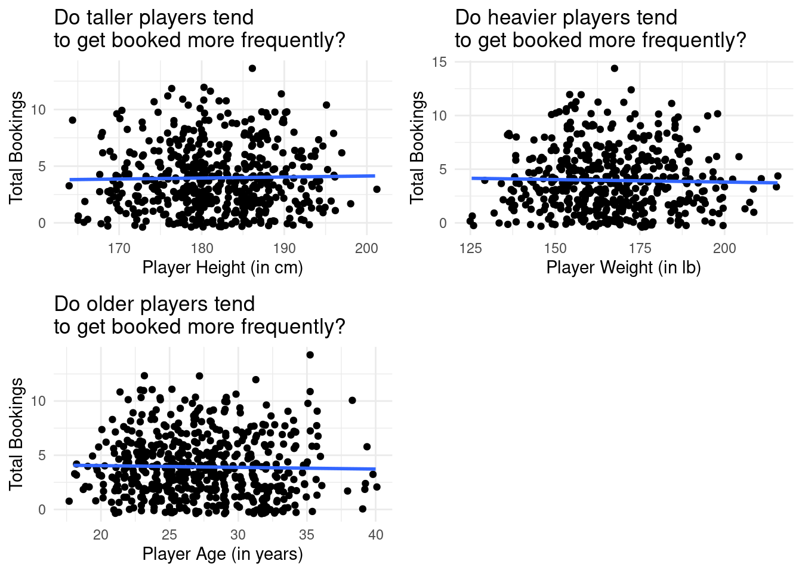
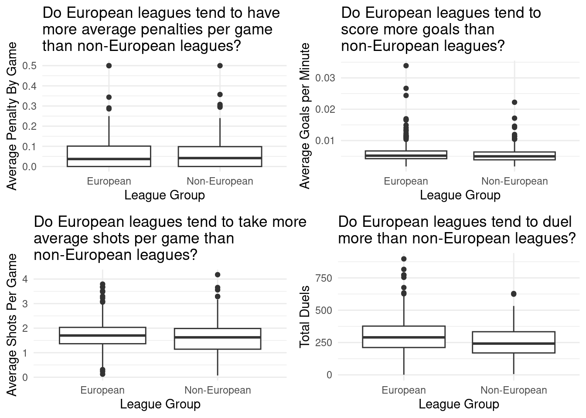

Assessing Top Soccer Player Statistics
Report
Introduction
The motivation behind this project was to determine whether or not there were relationships between soccer players, leagues, and their respective statistics. Each observation represents a player, and columns represent descriptors such as height, weight, nationality, passes, goals scored, assists, penalties, etc. Since soccer is such a popular global sport, we aimed to answer the following research questions in our project:
RQ 1 (Players): What factors influence booking frequency of players? Some factors we considered were player height, weight, age, and player rating.
RQ 2 (Leagues): Does aggressiveness differ between European and non-European leagues? Aggressiveness was indirectly measured through average penalties per game, average goals per minute, average shots per game, and average number of duels per game.
Summary of findings/results: XXXXX (to be filled in after)
Data description
The data for the top 20 football goal scorers in 2021 for the leagues specified in our GET request were sourced from: https://www.api-football.com/documentation-v3.
This dataset was created to rank and compare the top scoring football players across top leagues. This could be helpful for football fans, sports betters, or data scientists. There are 560 observations and 51 attributes (columns). The dataset contains player statistics (ex/ number of appearances, number of minutes played, number of yellow or red cards attained) for the top 20 scorers from the top 27 football leagues for the 2021 league season. The people involved are football players, who are aware of data collection, as this occurs during and after all of their games, because sports data is typically used to make general comparison (past/future versions of themselves, comparing their team to another, or between leagues, sports reporting (to football fans), or MVP decisions. As this is game data, it was likely influenced by referee rulings, as some scores may not have counted in the final game statistics.
What preprocessing was done
(see above in Data collection and cleaning)
Summarize more briefly??: The data was first collected by making API calls from https://www.api-football.com/documentation-v3 for various soccer leagues. We did this my making a GET request to their top scorers endpoint, supplying parameters for each of 27 top leagues in 2021. From this we collected 20 goal scorers for each respective league as we specified per the query string parameters. From this point, we used the jsonlite library to flatten the JSON API responses into a tibble and then exported the tibble to a CSV file.
Once we had our data stored in a CSV file, we wrote code to load it in R and then began the cleaning process. The main reason why we stored the data to a CSV rather than dynamically making API calls is due to the rate limits and fees associated with using the API. For the main cleaning process, we utilized the clean_names function from the janitor library to make sure our variable names conform to R naming conventions. After this, we dropped the columns we would not be using by employing a select statement on our data frame. Originally, our data set had columns that were relevant to goalkeepers, defenders, and other players that are not primarily goalscorers. We also noticed that our height and weight columns were not sanitized and in character form versus numeric, thus we sanitized these columns added the units to the variable name and dropped the old columns. Lastly, we made sure to remove any columns that appeared to be duplicates like player_id_48, player_id_1, and player_firstname.
Data analysis
Analysis #1: What factors influence booking frequency of players?
Specifically, does player height, weight, age, or games rating have
Pre-registered hypothesis: Taller, heavier, older, and more highly rated players get booked more frequently than shorter, less heavy, younger, less highly rated players.



# A tibble: 5 × 5
term estimate std.error statistic p.value
<chr> <dbl> <dbl> <dbl> <dbl>
1 (Intercept) 9.18 5.62 1.63 0.103
2 player_height_cm 0.0344 0.0299 1.15 0.251
3 player_weight_lb -0.0168 0.0128 -1.31 0.190
4 player_age -0.0235 0.0336 -0.698 0.485
5 games_rating -1.13 0.524 -2.15 0.0321Based on the above results, player rating is the only predictor with a p-value < the significance level, 0.05. Based on the side-by-side box plot representing the distribution of total bookings for highly rated players vs non-highly rated players, it appears as though non-highly ranked players get booked more frequently. However, the visualization itself does not tell us if that difference is significant. The following hypothesis test is to determine whether or not the true difference in population means of higher rated players (players with ratings >= mean rating) and lower rated players (players with ratings < mean rating) is significant:
Null Hypothesis: The true population mean of bookings for non-highly rated players is greater than the true population mean of bookings for highly rated players, on average. \[ \mu_{non-high} - \mu_{high} > 0 \]
Alternative Hypothesis: The true population mean of bookings for non-highly rated players is not greater than the true population mean of bookings for highly rated players, on average.
\[ \mu_{non-high} - \mu_{high} \leq 0 \]
# A tibble: 1 × 1
p_value
<dbl>
1 0.01
The p-value (0.01) is < alpha i.e. significance level of 0.05, therefore we reject the null hypothesis. The data provides convincing evidence that on average, true population mean of bookings for non-highly rated players is not greater than the true population mean of bookings for highly rated players.
Analysis #2:
Question: Are some leagues more aggressive, on average, than others?
Pre-registered hypothesis: European leagues are, on average, more aggressive than non-European leagues (i.e. more fouls, more goals per minute, and more duels.)



# A tibble: 5 × 5
term estimate std.error statistic p.value
<chr> <dbl> <dbl> <dbl> <dbl>
1 (Intercept) -1.98 0.489 -4.04 0.0000528
2 avg_penalty_by_game -2.76 1.51 -1.82 0.0686
3 avg_goals_per_min 305. 65.9 4.62 0.00000387
4 avg_shots_per_game -0.196 0.210 -0.932 0.351
5 duels_total 0.00564 0.00106 5.29 0.000000120Evaluation of significance
Analysis 2: Does the number of duels, on average, differ between European and non-European leagues?
Null hypothesis: The true population mean of duels for European and non-European players are not different, on average. The true population mean of duels for European is greater than the true population mean for non-European players, on average. dif EU - nonEU > 0 \[ \mu_{EU duel} - \mu_{non-EU duel} = 0 \]
Alt hypothesis: The true population mean of duels for European and non-European players are different, on average.
\[ \mu_{EU duel} - \mu_{non-EU duel} \not= 0 \]
# A tibble: 1 × 1
p_value
<dbl>
1 0# A tibble: 1 × 1
p_value
<dbl>
1 0The p-value is < alpha i.e significance level of 0.05, therefore we reject the null hypothesis. The data provides convincing evidence that the true population mean of bookings for highly rater players and non-highly rated players are different, on average.
Analysis 2: Does the amount of goals per minute, on average, differ between European and non-European leagues?
Null hypothesis: The true population mean of goals per minute for European and non-European players are not different, on average. One sided: The true population mean of goals per minute for European > non-European players (from EDA), on average. \[ \mu_{EU gpm} - \mu_{non-EU gpm} = 0 \]
Alt hypothesis: The true population mean of goals per minute for European and non-European players are different, on average.
\[ \mu_{EU gpm} - \mu_{non-EU gpm} \not= 0 \]
# A tibble: 1 × 1
p_value
<dbl>
1 0.196# A tibble: 1 × 1
p_value
<dbl>
1 0.098In running the hypothesis test, we get a p-value of 0.196 which is greater than the significance level of 0.05. Thus, we fail to reject the null hypothesis and conclude that there is not a proven statistically significant difference in the population means of average goals per minute of European vs Non-European leagues.
Interpretation and conclusions
Based on the above EDA and a constant slope on the lines of best fit between variables X and Y, there did not appear to be a correlation between:
height v booking frequency
weight v booking frequency
player_rating v booking frequency (not statistically significant, see above A1)
- this was further supported by hypothesis testing conducted in the “Evaluation of Significance” section (Analysis 1), whose conclusion supported that because p-value > 0.05, we fail to reject the null hypothesis. I.e. the data does not provide convincing evidence that the true population mean of bookings for highly rater players and non-highly rated players are different, on average.
league v. goals per min
league v. shots per game
league v. penalties per game
However, the following relationships were found to be significant:
league v. duels per game
- This was further supported by hypothesis testing conducted in the “Evaluation of Significance” section (Analysis 2), whose conclusion supported that since the p-value is < 0.05, we reject the null hypothesis. I.e. the data provides convincing evidence that the true population mean of bookings for highly rater players and non-highly rated players are different, on average.
Limitations
One limitation of this dataset is that it only contains information from the 2021 season. Therefore, we cannot make comparisons within groups (player, team, or league) over time. We also assume that there are no goalies in the dataset (best scorers i.e. offensive players), as this only contains goal scorers. Therefore, we are unable to assess a team’s defense, which can be important when considering how good a team is!
Add: is there a bias in our data?
Acknowledgments
In working on our project, we found several resources to be useful. For one, we would like to give credit to the API that we used to collect the data as well as to Stack Overflow for assisting with the API interaction as well as JSON handling in R. More specifically, the API was provided by https://www.api-football.com and specific documentation on how to interact with the endpoints in different languages was given by RapidAPI.
Apart from this, we took inspiration from some of the organization we saw during our peer review section. Specifically, after looking at the Skillful Charmander group, we decided to re-organize our analysis sections.
Beyond our specific technical and organizational acknowledgements, we would like to acknowledge our appreciation for the course staff and teaching assistants who helped us in answering any questions we have had along the way.
Appendix
Data Collection and Cleaning
The data for the top 20 football goal scorers in 2021 for the leagues specified in our GET request were sourced from: https://www.api-football.com/documentation-v3.
Have an initial draft of your data cleaning appendix. Document every step that takes your raw data file(s) and turns it into the analysis-ready data set that you would submit with your final project. Include text narrative describing your data collection (downloading, scraping, surveys, etc) and any additional data curation/cleaning (merging data frames, filtering, transformations of variables, etc). Include code for data curation/cleaning, but not collection.
# A tibble: 560 × 51
team_id team_name team_logo league_id league_name league_country league_logo
<dbl> <chr> <chr> <dbl> <chr> <chr> <chr>
1 47 Tottenham https://… 39 Premier Le… England https://me…
2 40 Liverpool https://… 39 Premier Le… England https://me…
3 33 Mancheste… https://… 39 Premier Le… England https://me…
4 47 Tottenham https://… 39 Premier Le… England https://me…
5 40 Liverpool https://… 39 Premier Le… England https://me…
6 50 Mancheste… https://… 39 Premier Le… England https://me…
7 40 Liverpool https://… 39 Premier Le… England https://me…
8 46 Leicester https://… 39 Premier Le… England https://me…
9 52 Crystal P… https://… 39 Premier Le… England https://me…
10 50 Mancheste… https://… 39 Premier Le… England https://me…
# ℹ 550 more rows
# ℹ 44 more variables: league_flag <chr>, games_appearences <dbl>,
# games_lineups <dbl>, games_minutes <dbl>, games_position <chr>,
# games_rating <dbl>, games_captain <lgl>, substitutes_in <dbl>,
# substitutes_out <dbl>, substitutes_bench <dbl>, shots_total <dbl>,
# shots_on <dbl>, goals_total <dbl>, goals_conceded <dbl>,
# goals_assists <dbl>, passes_total <dbl>, passes_key <dbl>, …Rows: 560
Columns: 51
$ team_id <dbl> 47, 40, 33, 47, 40, 50, 40, 46, 52, 50, 48, 46, …
$ team_name <chr> "Tottenham", "Liverpool", "Manchester United", "…
$ team_logo <chr> "https://media-2.api-sports.io/football/teams/47…
$ league_id <dbl> 39, 39, 39, 39, 39, 39, 39, 39, 39, 39, 39, 39, …
$ league_name <chr> "Premier League", "Premier League", "Premier Lea…
$ league_country <chr> "England", "England", "England", "England", "Eng…
$ league_logo <chr> "https://media-2.api-sports.io/football/leagues/…
$ league_flag <chr> "https://media-2.api-sports.io/flags/gb.svg", "h…
$ games_appearences <dbl> 35, 35, 30, 37, 34, 30, 35, 25, 33, 30, 36, 35, …
$ games_lineups <dbl> 35, 30, 27, 36, 32, 25, 27, 20, 31, 23, 34, 28, …
$ games_minutes <dbl> 3021, 2762, 2459, 3232, 2825, 2205, 2373, 1806, …
$ games_position <chr> "Attacker", "Attacker", "Attacker", "Attacker", …
$ games_rating <dbl> 7.505714, 7.391428, 7.260000, 7.378378, 7.202941…
$ games_captain <lgl> FALSE, FALSE, FALSE, FALSE, FALSE, FALSE, FALSE,…
$ substitutes_in <dbl> 0, 5, 3, 1, 2, 5, 8, 5, 2, 7, 2, 7, 1, 5, 2, 2, …
$ substitutes_out <dbl> 15, 5, 6, 1, 7, 9, 17, 5, 2, 6, 12, 14, 0, 7, 5,…
$ substitutes_bench <dbl> 0, 5, 3, 1, 2, 8, 9, 7, 2, 14, 2, 7, 1, 8, 2, 2,…
$ shots_total <dbl> 69, 101, 80, 97, 66, 56, 71, 47, 51, 46, 56, 54,…
$ shots_on <dbl> 49, 60, 43, 55, 39, 31, 33, 26, 32, 28, 34, 34, …
$ goals_total <dbl> 23, 23, 18, 17, 16, 15, 15, 15, 14, 13, 12, 12, …
$ goals_conceded <dbl> 0, 0, 0, 0, 0, 0, 0, 0, 0, 0, 0, 0, 0, 0, 0, 0, …
$ goals_assists <dbl> 7, 13, 3, 9, 2, 8, 4, 2, 1, 5, 10, 8, 5, 10, 2, …
$ passes_total <dbl> 1015, 1079, 879, 874, 1036, 1358, 744, 251, 909,…
$ passes_key <dbl> 73, 64, 26, 53, 43, 87, 41, 18, 47, 42, 42, 49, …
$ passes_accuracy <dbl> 25, 24, 24, 16, 23, 37, 15, 7, 22, 23, 15, 22, 1…
$ tackles_total <dbl> 15, 17, 8, 15, 33, 32, 39, 6, 40, 23, 36, 40, 33…
$ tackles_blocks <dbl> 6, 1, NA, 8, 1, 2, 2, NA, NA, NA, 2, 3, 2, 1, 3,…
$ tackles_interceptions <dbl> 13, 6, 2, 3, 8, 6, 6, 1, 5, 12, 21, 11, 14, 13, …
$ duels_total <dbl> 270, 309, 217, 437, 361, 209, 384, 141, 506, 278…
$ duels_won <dbl> 118, 100, 88, 198, 160, 101, 143, 51, 228, 117, …
$ dribbles_attempts <dbl> 92, 124, 32, 100, 77, 55, 69, 22, 152, 112, 88, …
$ dribbles_success <dbl> 51, 53, 20, 54, 47, 31, 27, 9, 75, 53, 50, 31, 2…
$ fouls_drawn <dbl> 36, 23, 18, 54, 50, 27, 40, 12, 101, 37, 43, 64,…
$ fouls_committed <dbl> 14, 12, 16, 42, 50, 21, 41, 13, 37, 19, 25, 22, …
$ cards_yellow <dbl> 2, 1, 8, 5, 5, 2, 3, 2, 5, 1, 6, 3, 8, 4, 7, 6, …
$ cards_yellowred <dbl> 0, 0, 0, 0, 0, 0, 0, 0, 1, 0, 0, 0, 0, 0, 0, 0, …
$ cards_red <dbl> 0, 0, 0, 0, 0, 0, 0, 0, 0, 0, 0, 0, 0, 0, 0, 0, …
$ penalty_scored <dbl> 0, 5, 3, 4, 0, 0, 0, 0, 5, 2, 0, 0, 5, 1, 1, 2, …
$ penalty_missed <dbl> 0, 1, 0, 0, 0, 0, 0, 0, 2, 1, 0, 0, 0, 0, 0, 0, …
$ player_name <chr> "Son Heung-Min", "Mohamed Salah", "Cristiano Ron…
$ player_lastname <chr> "Son", "Salah Hamed Mahrous Ghaly", "dos Santos …
$ player_age <dbl> 31, 31, 38, 30, 31, 32, 27, 36, 31, 29, 27, 27, …
$ player_nationality <chr> "Korea Republic", "Egypt", "Portugal", "England"…
$ player_injured <lgl> FALSE, FALSE, FALSE, FALSE, FALSE, FALSE, FALSE,…
$ player_photo <chr> "https://media-1.api-sports.io/football/players/…
$ player_birth_date <date> 1992-07-08, 1992-06-15, 1985-02-05, 1993-07-28,…
$ player_birth_place <chr> "Chuncheon", "Muḥāfaẓat al Gharbiyya", "Funchal"…
$ player_birth_country <chr> "Korea Republic", "Egypt", "Portugal", "England"…
$ id <dbl> 1, 2, 3, 4, 5, 6, 7, 8, 9, 10, 11, 12, 13, 14, 1…
$ player_height_cm <dbl> 184, 175, 187, 188, 175, 181, 178, 179, 180, 172…
$ player_weight_kg <dbl> 77, 71, 83, 86, 69, 68, 68, 74, 66, 69, 70, 73, …The data was first collected by making API calls from https://www.api-football.com/documentation-v3 for various soccer leagues. We did this my making a GET request to their top scorers endpoint, supplying parameters for each of 27 top leagues in 2021. From this we collected 20 goal scorers for each respective league as we specified per the query string parameters. From this point, we used the jsonlite library to flatten the JSON API responses into a tibble and then exported the tibble to a CSV file.
Once we had our data stored in a CSV file, we wrote code to load it in R and then began the cleaning process. The main reason why we stored the data to a CSV rather than dynamically making API calls is due to the rate limits and fees associated with using the API. For the main cleaning process, we utilized the clean_names function from the janitor library to make sure our variable names conform to R naming conventions. After this, we dropped the columns we would not be using by employing a select statement on our data frame. Originally, our data set had columns that were relevant to goalkeepers, defenders, and other players that are not primarily goalscorers. We also noticed that our height and weight columns were not sanitized and in character form versus numeric, thus we sanitized these columns added the units to the variable name and dropped the old columns. Lastly, we made sure to remove any columns that appeared to be duplicates like player_id_48, player_id_1, and player_firstname.